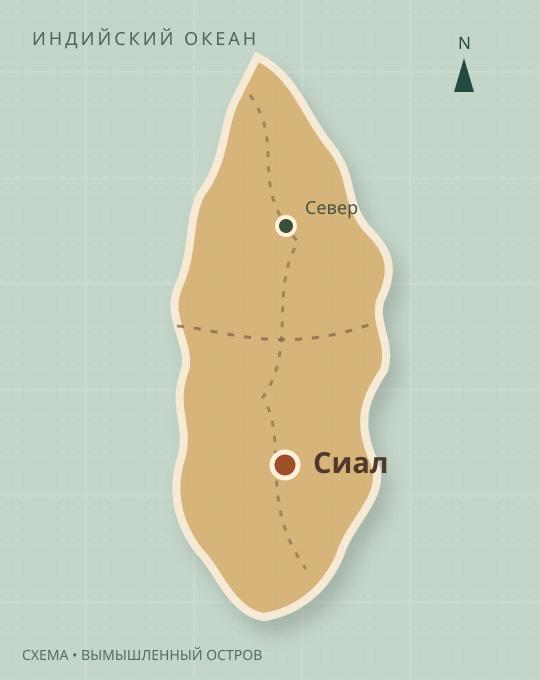

ОСТРОВ,
РАСКОЛОТЫЙ
ВОЙНОЙ.
Республика Занзибар. Нефть, торговые пути и пять сторон конфликта. История, в которой роль каждого игрока имеет значение.
Политика, которая
стала войной.
Занзибар- остров на юго-востоке Африканского рога, исторически получивший огромное исламское и арабское влияние. На 99% он населен мусульманами-суннитами, при том что более 85% населения - автохтонное чернокожее (банту). Еще 13% -смешанное арабское население и 2% занимают приезжие белые.
Занзибар богат нефтью и редкими минералами. Долгие годы власть держалась на доходах от экспорта и портового транзита от судов, проходящих по пути суэцкого канала. Но прибыль от ресурсов снизилась в 2023 с кризисом блокады проливов, а остаток ее оседал у узкого круга чиновников и владельцев аффилированных с третьими странами добывающих компаний, тогда как рыбацкие посёлки, фермерские угодья и неблагополучные северные районы оставались без дорог, электричества и честного представительства в органах власти.

Один остров.
Разные интересы.
Теперь остров расколот, но фронты постоянно меняются: вчерашние союзники спорят из-за денег и влияния, а обычные жители пытаются выжить между блокпостами, постепенно занимая стороны в этой борьбе.
Кто контролирует остров ↗
Пять сторон.
Ни одного простого ответа.


Пока люди воюют,
лес живёт.
Тропические леса, прибрежные рифы и животный мир острова. Отдельный визуальный раздел для атмосферы и RP-сюжетов.
Природа острова ↗Жизнь между
блокпостами.
История требует
правил.
Базовые нормы ролевого сервера: NLR, Non-RP, FearRP, Metagaming, Powergaming, KOS и взаимодействие фракций.